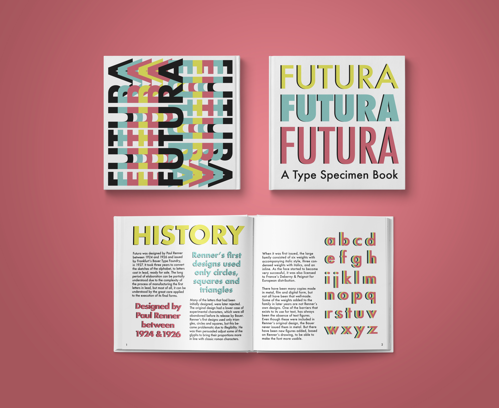
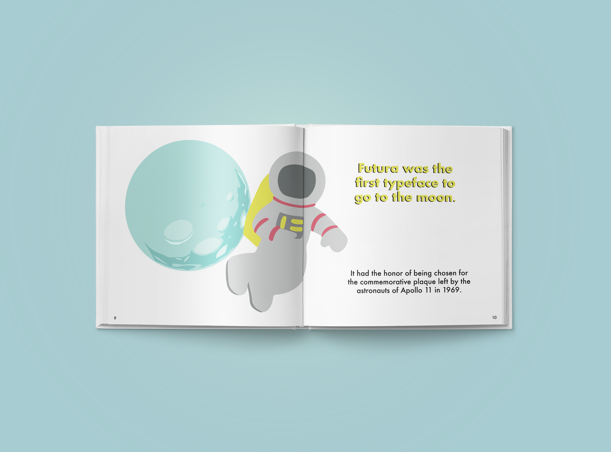
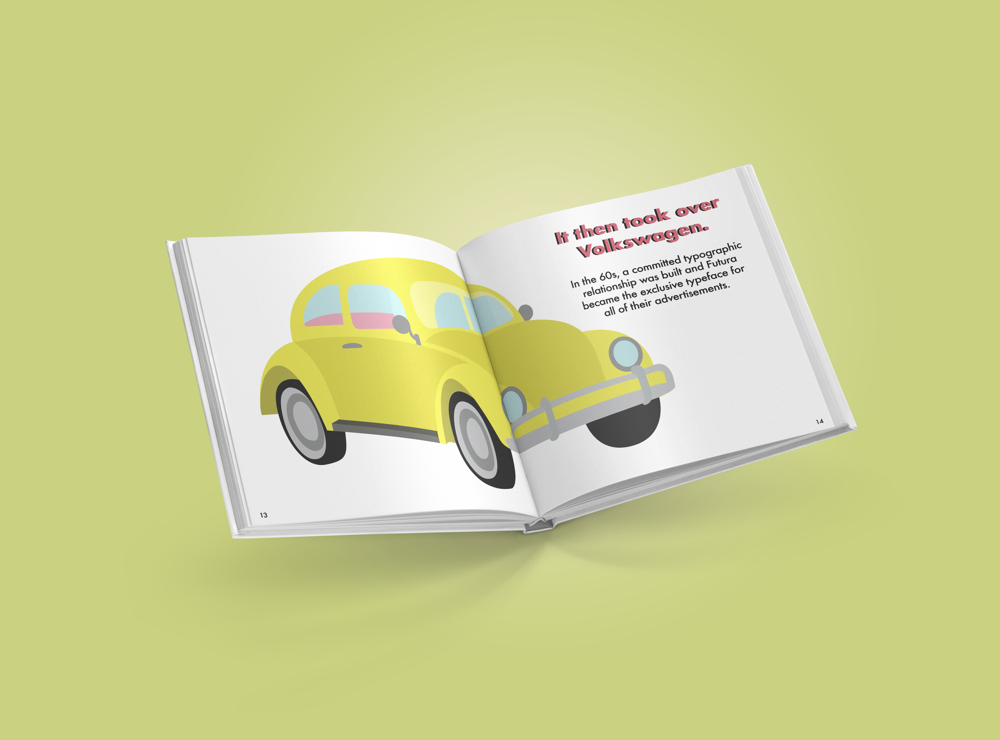

Type Specimen Book

The goal of this project was to design a type specimen book that told the story of a typeface. This process included thorough research, as a typeface with a significant impact in the world had to be chosen. I decided to make my book on Paul Renner’s Futura. I was particularly draw to this typeface due to how dynamic it is and its playfulness. Moreover, I decided to use this project as a way of illustrating, as this is something I like to do and wanted to continue working on it. Therefore, I created illustrations to be able to tell the story of the typeface and how much it has evolved over the years. The final product was a carefully crafted book that told the stroy of Futura and its major achivements.

